Python 데이터분석 라이브러리(11) - matplotlib
Data-Science 강의는 여러 절로 구성되어 있습니다.
- Relational Database MySQL(1) - Introduction
- Relational Database MySQL(2) - Install 및 환경설정
- Relational Database MySQL(3) - MySQL 전체 운영 실습
- Relational Database MySQL(4) - Data Modeling
- Relational Database MySQL(5) - MySQL Utility
- Relational Database MySQL(6) - SQL 기본
- Relational Database MySQL(7) - SQL 고급(1)
- Relational Database MySQL(8) - SQL 고급(2)
- Relational Database MySQL(9) - Table & View
- Relational Database MySQL(10) - Index
- Relational Database MySQL(11) - Index 성능비교
- NoSQL Database MongoDB(1) - Introduction
- NoSQL Database MongoDB(2) - NoSQL Data Modeling
- NoSQL Database MongoDB(3) - MongoDB Basic Concept
- Python 데이터분석 라이브러리(0) - Introduction
- Python 데이터분석 라이브러리(1) - NumPy
- Python 데이터분석 라이브러리(2) - NumPy(Exercise)
- Python 데이터분석 라이브러리(3) - Pandas(Series)
- Python 데이터분석 라이브러리(4) - Pandas(DataFrame 생성)
- Python 데이터분석 라이브러리(5) - Pandas(DataFrame indexing)
- Python 데이터분석 라이브러리(6) - Pandas(DataFrame functions)
- Python 데이터분석 라이브러리(7) - Pandas(DataFrame merge)
- Python 데이터분석 라이브러리(8) - Pandas(DataFrame 제어)
- Python 데이터분석 라이브러리(9) - Pandas(DataFrame Grouping)
- Python 데이터분석 라이브러리(10) - Pandas(Exercise)
- Python 데이터분석 라이브러리(11) - matplotlib
- Python 데이터분석을 위한 통계
- Python 데이터분석 라이브러리(12) - seaborn
- Python 데이터분석 라이브러리(13) - folium
데이터 시각화 - matplotlib
데이터 분석에서 다루는 데이터는 그 종류도 다양하고 무엇보다도 그 크기가 상당합니다. 이런 데이터의 구조나 패턴을 파악해 데이터에 대한 통찰력을 얻기 위해서는 시각화 도구가 필수입니다.
pandas는 내부에 데이터 시각화를 위한 도구를 내장하고 있지만 풍부한 편이 아니기 때문에 다른 전문화 도구를 사용하는게 좋습니다.
matplotlib은 python의 표준 시각화 도구라고 할 수 있을 정도로 2D 평면 그래프에 대한
다양한 포맷과 기능을 지원합니다. 여러가지 형태의 정형화된 plot뿐 아니라
다양한 시각화 기능을 제공합니다.
matplotlib으로 자주 사용되는 plot은 다음과 같습니다.
line plot(선 그래프)area plot(면적 그래프)scatter plot(산점도)bar chart(막대 그래프)histogram(히스토그램)box plot(박스 플롯)
우리가 matplotlib을 사용할 때 일반적으로 pyplot이라는 서브패키지를 많이 사용합니다. 이 package는
matlab의 시각화 명령을 거의 그대로 사용할 수 있도록 matplotlib의 하위 API를 wrapping한 명령어 집합을
제공합니다. 쉽게 말해 간단한 시각화 기능을 이용할 경우 pyplot package를 이용하는 것 만으로도 충분하다는
의미입니다.
일반적으로 matplotlib의 alias는 mpl을 사용하고 pyplot 서브패키지는 plt라는 alias를 이용합니다.
line plot
line plot(선 그래프)는 가장 간단한 plot입니다.
연속하는 데이터의 값들을 직선 또는 곡선으로 연결하여 데이터의 값 사이의 관계를 표현합니다. 특히
시계열 데이터와 같이 연속적인 값의 변화와 패턴을 파악하는데 적합합니다.
간단한 코드를 이용해서 확인해 보도록 하겠습니다.
import matplotlib.pyplot as plt
# plot의 제목 설정
plt.title("Line Plot")
# plot() 함수를 이용해 line plot을 그린다.
# 이 때 x 축의 자료 위치 즉, 틱(tick)은 자동으로 0, 1, 2, 3 이 된다.
# 만약 이 x tick 위치를 별도로 명시하고 싶다면 같은 길이의 리스트 혹은 배열 자료를 넣는다.
plt.plot([1, 5, 12, 25])
# plt.plot([10, 20, 30, 40], [1, 5, 12, 25])
# show() 함수는 실제로 차트로 렌더링(rendering)하고 마우스 움직임 등의
# 이벤트를 기다리라는 함수입니다.
# 주피터 노트북에서는 셀 단위로 플롯 명령을 자동 렌더링 해주므로 show 명령이 필요없지만
# 일반 파이썬 인터프리터로 가동되는 경우에는 꼭 필요하다.
plt.show()
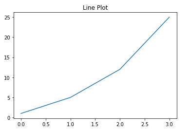
line plot 예제
선 그래프를 그리기 위해 아래의 간단한 Excel 파일을 이용합니다. 통계청에서 제공한 시도 간 인구 이동 데이터셋입니다.
실습 Excel 파일(lineplot_sample_data.xlsx)
# Excel 파일 로딩을 위해 다음의 module을 설치
# conda install openpyxl
import pandas as pd
import matplotlib.pyplot as plt
# Excel 데이터 로딩(시도별 전출입 인구수)
# 먼저 Excel 파일을 열어보고 어떻게 DataFrame으로 변환되는지 확인
df = pd.read_excel('./data/lineplot_sample_data.xlsx')
# 전출지별 column에 NaN(결치)가 포함되어 있다. Excel에서 DataFrame으로 변환 시 적절한 값을
# 찾지 못해서 결치값이 발생했는데 이 NaN을 바로 앞의 행의 값으로 대치하는 코드를 이용하여
# NaN을 처리한다.
df = df.fillna(method='ffill')
# display(df)
# 우리가 관심있는 데이터는 서울특별시에서 다른 지역으로 이동한 데이터이다.
# '전출지별'에서 '서울특별시'라는 값을 갖는 데이터만 추출하여 DataFrame을 새로 생성한다.
# 이때 '전입지별'에서 '서울특별시'라고 되어 있는 부분은 제외한다.
bool_mask = (df['전출지별'] == '서울특별시') & (df['전입지별'] != '서울특별시')
df_seoul = df[bool_mask]
# display(df_seoul)
# 결과로 나온 DataFrame에서
# '전출지별' 열을 삭제한 후 '전입지별' 열의 이름을 '전입지'로 변경하고
# '전입지' 열을 DataFrame의 행 index로 설정한다.
df_seoul = df_seoul.drop('전출지별', axis=1)
df_seoul.rename({'전입지별':'전입지'}, axis=1, inplace=True)
df_seoul.set_index('전입지', inplace=True)
# display(df_seoul)
# 선 그래프로 그릴 내용은 서울에서 경기도로 전입한 사람의 연도별 추이다.
# DataFrame에서 전입지가 '경기도'인 행을 선택해서 Series를 얻는다.
s = df_seoul.loc['경기도']
# 해당 데이터로 line plot을 그리는데 x축은 Series의 index를 이용하고
# y축은 데이터의 값을 사용한다.
plt.plot(s.index, s.values)
# plt.plot(s) # Series인 경우 이렇게 해도 된다.
plt.show()
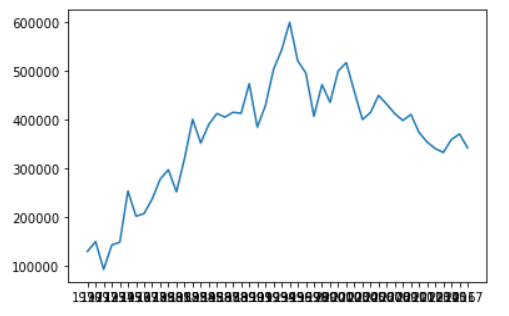
한글 폰트 설정
matplotlib 사용 시 한글을 title 같은 곳에 지정하면 한글이 깨지는 현상이 발생합니다. 한글 폰트를 적용해야 정상적으로 한글이 출력됩니다.
한글폰트는 아래의 링크에서 받으셔서 사용하시면 됩니다.
# 필요한 패키지와 라이브러리를 가져옴
import matplotlib as mpl
import matplotlib.pyplot as plt
import matplotlib.font_manager as fm
from matplotlib import rc
import warnings
import numpy as np
warnings.filterwarnings(action='ignore')
# 그래프에서 마이너스(-) 폰트 깨지는 문제에 대한 대처
mpl.rcParams['axes.unicode_minus'] = False
# 데이터는 위에서 작업한 서울특별시에서 경기도로 전입한 연도별 인구 데이터를
# 사용합니다.
# 한글폰트 사용시 한글 출력안됨!
plt.plot(s.index, s.values)
plt.title('서울 -> 경기 인구 이동')
plt.ylabel('이동 인구수')
plt.xlabel('연도')
plt.show()
# 폰트를 사용하는 방법은 사실 몇 가지 형태가 있습니다.
# 여기서는 FontProperties를 사용하는 방법에 대해서 알아보겠습니다.
font_path = './font/malgun.ttf'
font_name = fm.FontProperties(fname=font_path).get_name()
rc('font', family=font_name)
plt.plot(s.index, s.values)
plt.title('서울 -> 경기 인구 이동')
plt.ylabel('이동 인구수')
plt.xlabel('연도')
plt.show()
# # 참고
# # matplotlib.rcParams[]으로 전역글꼴 설정 방법
# plt.rcParams["font.size"] = 20
# plt.rcParams["figure.figsize"] = (10,4)
# plt.rc('font', family=font_name)
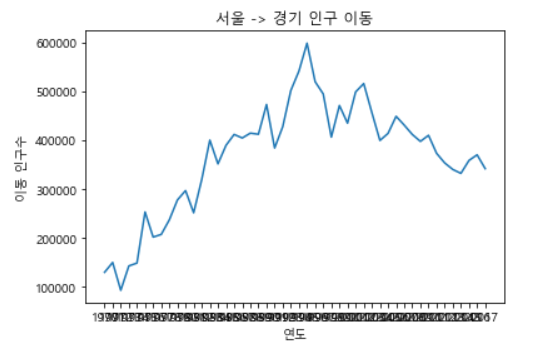
스타일 지정
plot 함수는 보는 사람이 그림을 더 알아보기 쉽도록 다양한 style을 지원합니다. 내용이 많으니 아래의 코드를 통해서 하나씩 알아보도록 하죠.
# 필요한 패키지와 라이브러리를 가져옴
import matplotlib as mpl
import matplotlib.pyplot as plt
import matplotlib.font_manager as fm
from matplotlib import rc
import warnings
import numpy as np
warnings.filterwarnings(action='ignore')
# 그래프에서 마이너스(-) 폰트 깨지는 문제에 대한 대처
mpl.rcParams['axes.unicode_minus'] = False
font_path = './font/malgun.ttf'
font_name = fm.FontProperties(fname=font_path).get_name()
rc('font', family=font_name)
# 데이터는 위에서 작업한 서울특별시에서 경기도로 전입한 연도별 인구 데이터를
# 사용합니다.
# 그래프의 스타일 서식을 지정합니다.
# 사용할 수 있는 서식은 matplotlib API reference를 참조.
# print(plt.style.available)
plt.style.use('ggplot')
# 그래프의 그림 크기를 지정합니다. (단위는 인치로 가로, 세로 순으로 지정)
plt.figure(figsize=(10,5))
# x축 눈금이 읽기 어렵기 때문에 label을 회전시킨다.
plt.xticks(rotation='vertical')
# 데이터를 plot 함수에 입력(마커표시 포함)
# 데이터 위치를 나타내는 기호를 마커(marker)라고 합니다.
# 자주 사용되는 마커는 다음과 같습니다.
# .(point marker), ,(pixel marker), o(circle marker),
# v(triangle_down marker), s(square marker),
# p(pentagon marker), *(star marker), +(plus marker),
# x(x marker), D(diamond marker), d(thin_diamond marker)
# 색깔을 지정하는 방법은 색 이름 혹은 약자를 사용하거나
# # 문자로 시작되는 RGB코드를 사용할 수 있습니다.
# blue(b), green(g), red(r), cyan(c),magenta(m),
# yellow(y) black(k), white(w)
plt.plot(s.index, s.values,
marker='o',
markersize=8,
markerfacecolor='g',
color='r',
linewidth=2)
plt.title('서울 -> 경기 인구 이동')
plt.ylabel('이동 인구수')
plt.xlabel('연도')
# 범례표시
plt.legend(labels=['서울 -> 경기'], loc='best')
# 그래프에 설명을 붙이는 주석도 추가한다.
# annotate() 함수를 이용하게되는데 arrowprops를 이용하면 텍스트대신
# 화살표를 이용할 수 있다.
# 일단 주석을 넣을 공간을 확보하기 위해서 y축 범위를 조금 늘려준 후
# annotate() 함수로 주석을 달아보자.
plt.ylim(5000, 800000)
# 주석 - 화살표
plt.annotate("",
xy=(20,620000), # 화살표의 머리부분 (끝점) x좌표는 index, y좌표는 값을 이용
xytext=(2,290000), # 화살표의 꼬리부분 (시작점)
xycoords='data', # 좌표체계
arrowprops=dict(arrowstyle='->',
color='skyblue',
lw=5)
)
plt.annotate("",
xy=(47,450000), # 화살표의 머리부분 (끝점) x좌표는 index, y좌표는 값을 이용
xytext=(30,580000), # 화살표의 꼬리부분 (시작점)
xycoords='data', # 좌표체계
arrowprops=dict(arrowstyle='->',
color='olive',
lw=5)
)
# 주석표시 - 텍스트
plt.annotate('인구 이동 증가(1970-1995)', # 텍스트입력
xy=(10,350000), # 텍스트위치 기준점
rotation=30, # 텍스트회전 각도
va='baseline', # 텍스트 상하 정렬
ha='center', # 텍스트 좌우 정렬
fontsize=15
)
plt.annotate('인구 이동 감소(1995-2017)', # 텍스트입력
xy=(40,500000), # 텍스트위치 기준점
rotation=-11, # 텍스트회전 각도
va='baseline', # 텍스트 상하 정렬
ha='center', # 텍스트 좌우 정렬
fontsize=15
)
# 변경사항을 저장하고 그래프 표시
plt.show()
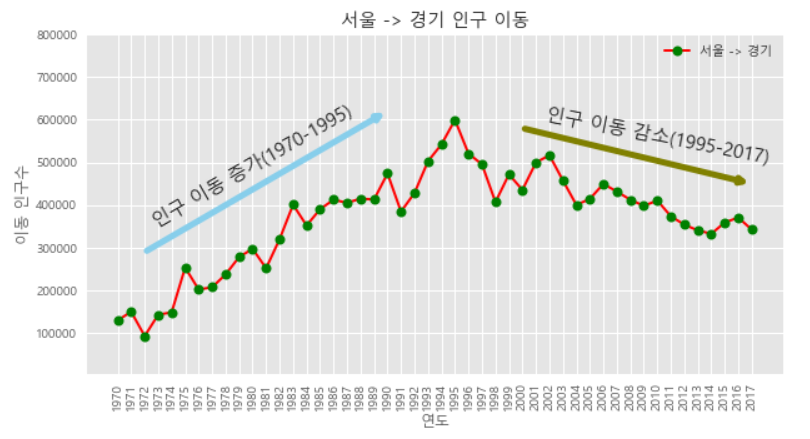
Figure, Axes, Axis
matplotlib이 그리는 그림은 Figure객체, Axes객체, Axis객체로 구성됩니다.
Figure객체는 그림이 그려지는 canvas를 의미합니다. Figure객체는 한 개 이상의 Axes 객체를 포함하며, Axes 객체는 다시 두 개 이상의 Axis 객체를 포함합니다.
모든 그림은 Figure 객체입니다. 하나의 Figure는 하나의 아이디 숫자와 window를 가지는데 jupyter notebook에서는 window객체가 생성되지 않지만 python을 독립 실행하는 경우 하나의 Figure당 하나의 window를 별도로 가지게 됩니다.
Figure객체를 얻기 위해서는 figure() 함수를 이용해야 합니다. 하지만 일반적으로
plot 명령을 이용하면 자동으로 Figure를 생성해주기 때문에 일반적으로 figure() 함수를
잘 사용하지 않습니다. figure() 함수를 명시적으로 사용하는 경우는 여러개의 window를
동시에 띄워야 하거나 그림의 크기를 설정하고 싶을때 사용합니다.
하나의 window안에 여러개의 plot을 배열 형태로 출력해야 하는 경우도 있습니다. Figure 객체 안에 있는 각각의 plot은 Axes라고 불리는 객체에 속합니다.
Axes 객체를 생성하려면 원래는 subplot 함수를 사용해서 명시적으로 Axes 객체를 얻어야 합니다.
또한 plot 함수를 사용하면 자동으로 Axes 객체를 생성해 줍니다.
subplot은 그리드 형태의 Axes 객체들을 생성합니다.
이 subplots 함수를 이용하면 복수의 Axes 객체를 동시에 생성할 수도 있습니다.
이때는 2차원 ndarray 형태로 Axes 객체가 반환됩니다.
하나의 Axes 객체는 두 개 이상의 Axis 객체를 가질 수 있습니다.
Axis 객체는 plot의 가로축이나 세로축을 나타내는 객체입니다.
여러가지 plot을 하나의 Axes 객체에 표시할 때 y값의 크기가 달라서 표시하기 힘든 경우가
종종있습니다. 이 때는 twinx() 함수를 이용해 복수의 y 축을 가진 plot을 만들수 있습니다.
twinx 명령은 x축을 공유하는 새로운 Axes 객체를 만들어줍니다.
그러면 코드를 이용해서 하나하나 살펴보도록 하겠습니다.
# 필요한 패키지와 라이브러리를 가져옴
import matplotlib as mpl
import matplotlib.pyplot as plt
import matplotlib.font_manager as fm
from matplotlib import rc
import warnings
import numpy as np
warnings.filterwarnings(action='ignore')
# 그래프에서 마이너스(-) 폰트 깨지는 문제에 대한 대처
mpl.rcParams['axes.unicode_minus'] = False
font_path = './font/malgun.ttf'
font_name = fm.FontProperties(fname=font_path).get_name()
rc('font', family=font_name)
# 데이터는 위에서 작업한 서울특별시에서 경기도로 전입한 연도별 인구 데이터를
# 사용합니다.
# 그래프의 스타일 서식을 지정합니다.
# 사용할 수 있는 서식은 matplotlib API reference를 참조.
# print(plt.style.available)
plt.style.use('ggplot')
# 그래프의 그림 크기를 지정합니다. (단위는 인치로 가로, 세로 순으로 지정)
# figure에 2개의 subplot을 생성합니다.
fig = plt.figure(figsize=(10,10))
ax1 = fig.add_subplot(2,1,1)
ax2 = fig.add_subplot(2,1,2)
ax1.set_title('서울 -> 경기 인구 이동', size=20)
ax1.set_xlabel('기간', size=12)
ax1.set_ylabel('이동 인구수', size=12)
ax1.plot(s.index, s.values, 'o', markersize=10) # 선을 그리지 않고 점으로만 표시
ax2.plot(s.index, s.values,
marker='o',
markersize=8,
markerfacecolor='g',
color='r',
linewidth=2,
label='서울 -> 경기')
ax2.legend(loc='best')
ax1.set_ylim(50000, 800000)
ax2.set_ylim(50000, 800000)
# 축 눈금 label 지정 및 회전
ax1.set_xticklabels(s.index, rotation=75)
ax2.set_xticklabels(s.index, rotation=75)
# 축 눈금 label 크기
ax1.tick_params(axis='x', labelsize=5)
# 변경사항을 저장하고 그래프 표시
plt.show()
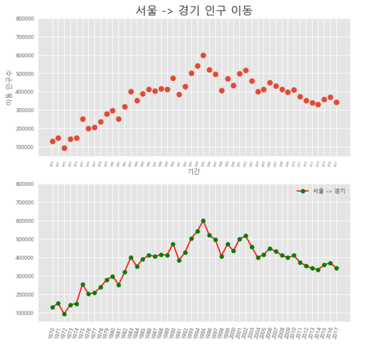
하나의 Axes에 여러 개의 그래프를 추가하는 것도 가능합니다. 이번에는 데이터를 조금 바꿔서 서울특별시에서 충청남도, 경상북도, 강원도로 이동한 인구 변화 그래프 3개를 하나의 같은 화면에 그려보도록 하겠습니다.
데이터를 만들기 위해 python의 map() 함수가 사용됩니다.
map은 리스트의 요소를 지정된 함수로 처리해주는 함수입니다.
# Excel 파일 로딩을 위해 다음의 module을 설치
# conda install openpyxl
import pandas as pd
import matplotlib.pyplot as plt
df = pd.read_excel('./data/lineplot_sample_data.xlsx')
df = df.fillna(method='ffill')
bool_mask = (df['전출지별'] == '서울특별시') & (df['전입지별'] != '서울특별시')
df_seoul = df[bool_mask]
df_seoul = df_seoul.drop('전출지별', axis=1)
df_seoul.rename({'전입지별':'전입지'}, axis=1, inplace=True)
df_seoul.set_index('전입지', inplace=True)
# 서울에서 충청남도, 경상북도, 강원도로 이동한 이구 데이터 값만 추출
col_year = list(map(str, range(1970,2018)))
# print(col_year)
new_df = df_seoul.loc[['충청남도', '경상북도', '강원도'], col_year]
# display(new_df)
plt.style.use('ggplot')
plt.figure(figsize=(20,5))
plt.plot(col_year, new_df.loc['충청남도',:], marker='o',markerfacecolor='green',
markersize=10, color='olive', linewidth=2, label='서울 -> 충남')
plt.plot(col_year, new_df.loc['경상북도',:], marker='o',markerfacecolor='blue',
markersize=10, color='skyblue', linewidth=2, label='서울 -> 경남')
plt.plot(col_year, new_df.loc['강원도',:], marker='o',markerfacecolor='red',
markersize=10, color='magenta', linewidth=2, label='서울 -> 강원')
plt.legend(loc='best')
plt.title('서울 -> 충청남도, 경상북도, 강원도 인구 이동', size=20)
plt.xlabel('기간', size=12)
plt.ylabel('이동 인구수', size=12)
plt.xticks(rotation='vertical')
plt.ylim(1000, 70000)
plt.show()
# 참고(matplotlib의 color)
# import matplotlib
# colors = {} # dictionary (color명:HEX값)
# for c_name, c_hex in matplotlib.colors.cnames.items():
# colors[c_name] = c_hex
# print(colors)
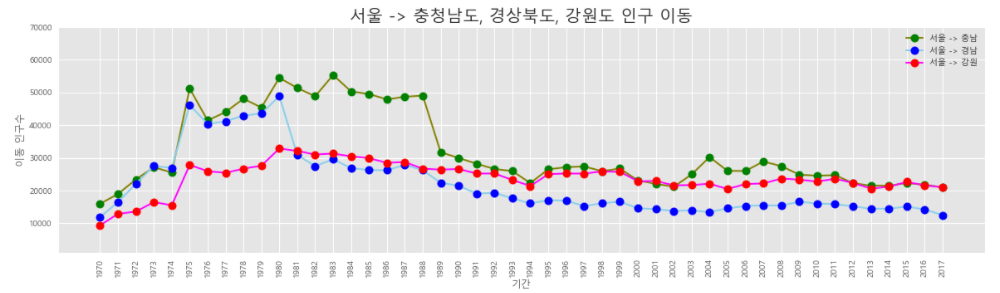
Area Chart
면적 그래프(area plot)는 각 열의 데이터를 선 그래프로 구현하는데, 선 그래프와 x축 사이의 공간에 색을 입히는 개념입니다. 색의 투명도는 기본값이 0.5로 투과되어 보이게 됩니다.
위에서 살펴본 plot() 함수에 kind=area 설정을 추가하면 간단하게 구현할 수 있습니다.
조심해야 할 점은 그래프를 그릴때 누적여부를 설정할 수 있는데 기본값이 ‘stacked=True’입니다.
즉, 누적그래프를 그린다는 것입니다. 이 경우 각 열의 패턴과 함께 전체의 합계가 어떻게 변하는지를
파악할 수 있습니다. 그래서 면적 그래프를 다른말로 누적 선 그래프(stacked line plot)이라고
하기도 합니다.
위에서 실습했던 데이터를 이용하여 이번에는 area plot을 그려보기로 하겠습니다. stacked 설정을 변경해서 한번 확인해보세요.
import pandas as pd
import matplotlib.pyplot as plt
df = pd.read_excel('./data/lineplot_sample_data.xlsx')
df = df.fillna(method='ffill')
bool_mask = (df['전출지별'] == '서울특별시') & (df['전입지별'] != '서울특별시')
df_seoul = df[bool_mask]
df_seoul = df_seoul.drop('전출지별', axis=1)
df_seoul.rename({'전입지별':'전입지'}, axis=1, inplace=True)
df_seoul.set_index('전입지', inplace=True)
# 서울에서 충청남도, 경상북도, 강원도로 이동한 이구 데이터 값만 추출
col_year = list(map(str, range(1970,2018)))
# print(col_year)
new_df = df_seoul.loc[['충청남도', '경상북도', '강원도'], col_year]
trans_new_df = new_df.transpose()
# index를 정수형으로 변경
trans_new_df.index = trans_new_df.index.map(int)
# display(trans_new_df)
plt.style.use('ggplot')
trans_new_df.plot(kind='area',
stacked=False, # 그래프 누적 여부
alpha=0.2,
figsize=(20,10))
plt.legend(loc='best')
plt.title('서울 -> 충청남도, 경상북도, 강원도 인구 이동', size=20)
plt.xlabel('기간', size=12)
plt.ylabel('이동 인구수', size=12)
plt.xticks(rotation='vertical')
plt.show()
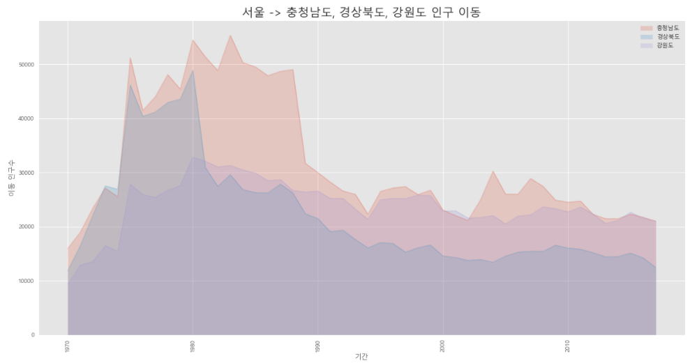
Bar Chart
막대 그래프(bar plot)는 데이터 값의 크기에 비례하여 높이를 갖는 직사각형 막대로 표현합니다. 세로형과 가로형 두 가지가 존재하며 세로형인 경우 정보 제공 측면에서 보면 선 그래프와 큰 차이는 없습니다.
세로형 막대 그래프는 시간적으로 차이가 나는 두 점에서 데이터 값의 차이를 보다 잘 설명한다는 특징이 있습니다. 즉, 시계열 데이터를 표현하는데 적합하다고 생각하시면 됩니다.
import pandas as pd
import matplotlib.pyplot as plt
df = pd.read_excel('./data/lineplot_sample_data.xlsx')
df = df.fillna(method='ffill')
bool_mask = (df['전출지별'] == '서울특별시') & (df['전입지별'] != '서울특별시')
df_seoul = df[bool_mask]
df_seoul = df_seoul.drop('전출지별', axis=1)
df_seoul.rename({'전입지별':'전입지'}, axis=1, inplace=True)
df_seoul.set_index('전입지', inplace=True)
# 서울에서 충청남도, 경상북도, 강원도로 이동한 이구 데이터 값만 추출
col_year = list(map(str, range(2010,2018)))
# print(col_year)
new_df = df_seoul.loc[['충청남도', '경상북도', '강원도'], col_year]
trans_new_df = new_df.transpose()
# index를 정수형으로 변경
trans_new_df.index = trans_new_df.index.map(int)
plt.style.use('ggplot')
trans_new_df.plot(kind='bar',
figsize=(20,10),
width=0.7,
color=['orange', 'green', 'blue'])
plt.ylim(5000, 30000)
plt.legend(loc='best')
plt.title('서울 -> 충청남도, 경상북도, 강원도 인구 이동', size=20)
plt.xlabel('기간', size=12)
plt.ylabel('이동 인구수', size=12)
plt.xticks(rotation='vertical')
plt.show()
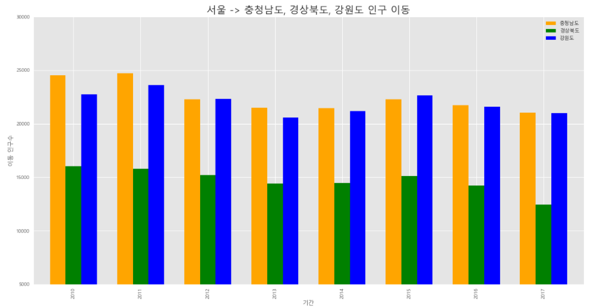
가로형 막대 그래프는 각 변수 사이 값의 크기 차이를 설명하는데 적합합니다. kind=barh 설정을
통해 가로형 막대 그래프를 그릴 수 있습니다.
그럼 간단한 문제 하나만 그려보죠. 우리가 사용하는 데이터에서 2010~2017년의 기간동안 서울에서 각 시도로 이동한 인구의 합계를 구하여 시도별로 비교하는 그래프를 그려보도록 하겠습니다.
import pandas as pd
import matplotlib.pyplot as plt
df = pd.read_excel('./data/lineplot_sample_data.xlsx')
df = df.fillna(method='ffill')
bool_mask = (df['전출지별'] == '서울특별시') & (df['전입지별'] != '서울특별시')
df_seoul = df[bool_mask]
df_seoul = df_seoul.drop('전출지별', axis=1)
df_seoul.rename({'전입지별':'전입지'}, axis=1, inplace=True)
df_seoul.set_index('전입지', inplace=True)
# 서울에서 충청남도, 경상북도, 강원도로 이동한 이구 데이터 값만 추출
col_year = list(map(str, range(2010,2018)))
# print(col_year)
new_df = df_seoul.loc[['충청남도', '경상북도', '강원도'], col_year]
new_df['합계'] = new_df.sum(axis=1)
sort_df = new_df[['합계']].sort_values(by='합계', ascending=False)
display(sort_df)
plt.style.use('ggplot')
sort_df.plot(kind='barh',
figsize=(10,5),
width=0.5,
color=['rebeccapurple'])
plt.legend(loc='best')
plt.title('서울 -> 충청남도, 경상북도, 강원도 인구 이동', size=20)
plt.xlabel('기간', size=12)
plt.ylabel('이동 인구수', size=12)
plt.show()
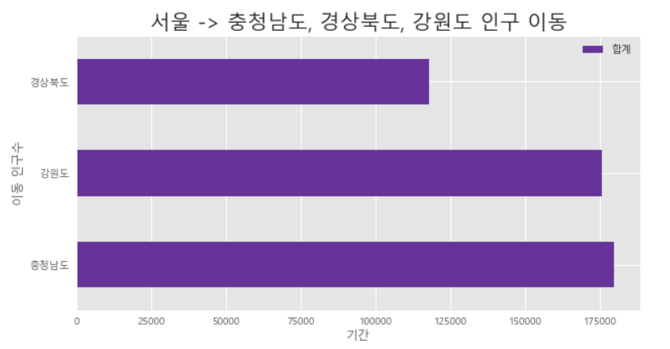
지금까지는 그래프를 그릴 때 y축을 하나만 사용했었습니다. Excel 처럼 보조 축을 추가하여 2개의 y축을 가지는 그래프는 어떻게 그릴 수 있을까요?
이번에는 조금 다른 데이터를 가지고 2개의 y축을 가지는 그래프를 그려보도록 하겠습니다.
사용할 데이터는 2018년 통계청에서 제공한 남북한 발전량 데이터셋입니다. 파일은 아래의 링크에서 다운로드 할 수 있습니다.
실습 Excel 파일(korea_power_generation.xlsx)
기본축에는 연도별 북한의 발전량을 막대그래프로 표현합니다. 발전량은 화력과 수력발전량을 각각 누적 막대그래프로 표시하고 보조축에는 선 그래프를 표시합니다. 보조축의 선 그래프는 북한 발전량의 전년 대비 증감률을 백분률로 표시합니다.
이를 위해 excel 파일을 불려들여서 pandas DataFrame을 생성하고 데이터를 정리하는 작업이 먼저 선행되어야 합니다.
코드로 알아보도록 하죠.
import pandas as pd
import matplotlib.pyplot as plt
from matplotlib import font_manager, rc
# 한글폰트 설정
font_path = './font/malgun.ttf'
font_name = font_manager.FontProperties(fname=font_path).get_name()
rc('font', family=font_name)
plt.style.use('ggplot')
plt.rcParams['axes.unicode_minus'] = False # 그래프에서 마이너스(-) 폰트 깨지는 문제에 대한 대처
# Data Loading
df = pd.read_excel('./data/korea_power_generation.xlsx')
# display(df)
# 북한의 화력, 수력발전 데이터만 필요하기 때문에 slicing을 통해 데이터 추출
df = df.loc[5:7]
# display(df)
# 필요없는 column 제거 및 index 설정.
df = df.drop('전력량 (억㎾h)', axis=1, inplace=False)
df.set_index('발전 전력별', inplace=True)
# display(df)
df = df.transpose() # x축이 연도가 되기 위해 전치행렬(행과 열을 교환)로 변환
# display(df)
df = df.rename(columns={'합계':'총발전량'})
df['총발전량-1년'] = df['총발전량'].shift(1)
df['증감률'] = ((df['총발전량'] / df['총발전량-1년']) - 1) * 100
display(df)
# 그래프 그리기
ax1 = df[['수력', '화력']].plot(kind='bar',
figsize=(20,10),
width=0.7,
stacked=True)
ax2 = ax1.twinx()
ax2.plot(df.index, df['증감률'], marker='o', markersize=20,
color='red', label='전년대비 증감률(%)')
ax1.set_ylim(0,500)
ax2.set_ylim(-50,50)
ax1.set_xlabel('연도')
ax1.set_ylabel('발전량 (억㎾h)')
ax2.set_ylabel('전년대비 증감률(%)')
plt.title('북한 전력 발전량 (1990-2016)', size=20)
ax1.legend(loc='upper left')
plt.show()
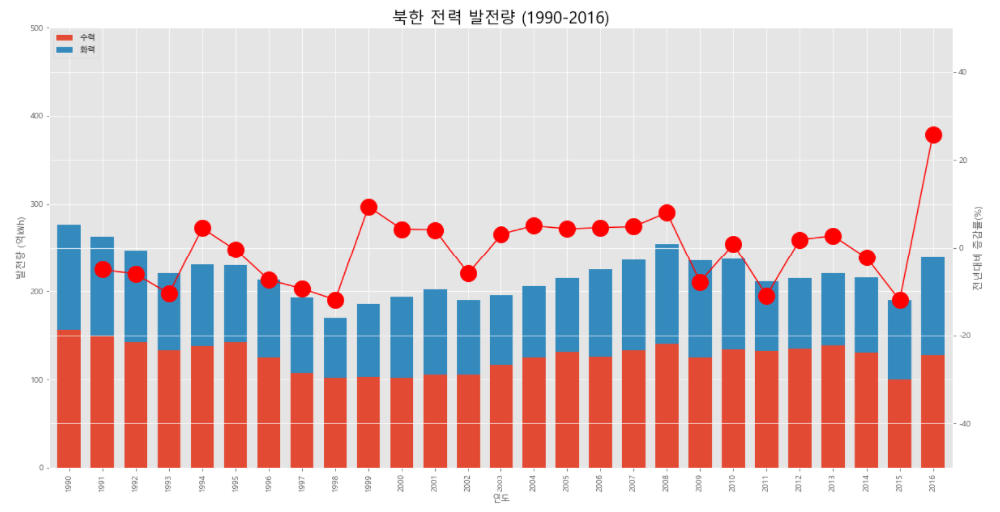
Histogram
Histogram은 변수가 하나인 단변수 데이터의 빈도수를 그래프로 표현하는 것입니다.
x축을 같은 크기의 여러 구간으로 나누고 각 구간에 속하는 데이터 값의 개수(빈도)를 y축에 표시합니다. 당연히 구간을 나느는 간격의 크기에 따라 빈도가 달라지고 histogram의 모양이 변하게 됩니다.
UCI 자동차 연비 데이터셋을 이용해 간단한 histogram을 그려보도록 하죠.
pandas로 해당 데이터를 살펴보면 column명이 들어있지 않다는 걸 알게됩니다. 각 column의 의미는 순서대로 다음과 같습니다.
'MPG'(연비),
'Cylinders'(실린더 수),
'Displacement'(배기량),
'Horsepower'(출력),
'Weight'(차중),
'Acceleration'(가속능력),
'Model Year'(출시년도),
'Origin'(제조국), # 1=USA, 2=EU, 3=JPN
'Name'(모델명)
Histogram을 그리기 위해 다음의 코드를 살표보도록 하죠.
import pandas as pd
import matplotlib.pyplot as plt
plt.style.use('classic') # ggplot보다는 classic이 보기 편하다
df = pd.read_csv('./data/auto-mpg.csv', header=None)
# display(df)
# column이름 지정
df.columns = ['MPG','Cylinders','Displacement','Horsepower','Weight','Acceleration',
'Model Year','Origin','Name']
# display(df)
# MPG(연비- miles per gallon) 열에 대한 histogram
df['MPG'].plot(kind='hist', bins=10, color='blue', figsize=(10,5))
plt.title('MPG Histogram')
plt.xlabel('mpg')
plt.show()
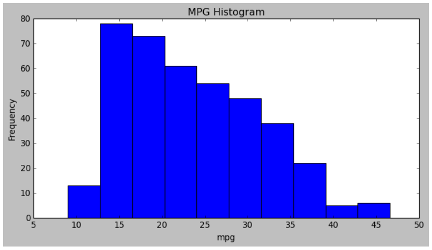
Scatter(산점도)
산점도는 서로 다른 두 변수 사이의 관계를 나타냅니다. 2개의 연속 변수를 각각 x축과 y축에 하나씩 놓고 데이터 값이 위치하는 (x,y) 좌표를 찾아서 점으로 표시합니다.
다음의 코드를 이용해 산점도를 그려보죠.
사용하는 데이터 셋은 위에서 사용했던 MPG Data Set입니다.
import pandas as pd
import matplotlib.pyplot as plt
plt.style.use('default')
df = pd.read_csv('./data/auto-mpg.csv', header=None)
# display(df)
# column이름 지정
df.columns = ['MPG','Cylinders','Displacement','Horsepower','Weight','Acceleration',
'Model Year','Origin','Name']
df.plot(kind='scatter', x='Weight', y='MPG',
color='red', s=10, figsize=(10,5))
plt.title('Scatter plot - MPG vs. Weight')
plt.show()
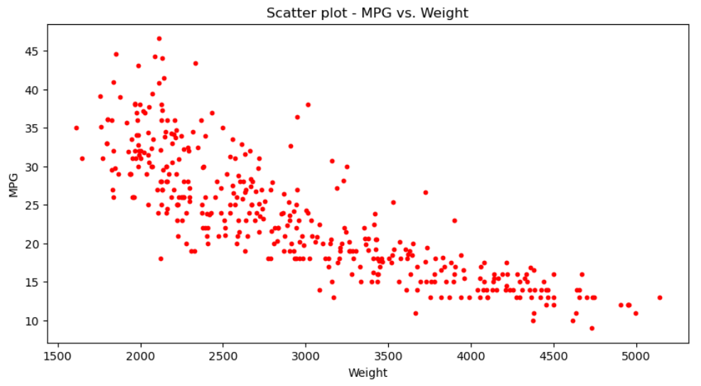
Pie Chart
파이 차트는 우리가 흔히 보는 그래프 형태로 원을 파이 조각처럼 나누어서 표현합니다. 조각의 크기는 해당 변수에 속하는 데이터 값의 크기에 비례합니다.
위의 MPG Data Set을 이용해서 Origin(제조국) 별 차량 생산량을 파이 차트로 표현해
보겠습니다.
import pandas as pd
import matplotlib.pyplot as plt
plt.style.use('default')
df = pd.read_csv('./data/auto-mpg.csv', header=None)
# display(df)
# column이름 지정
df.columns = ['MPG','Cylinders','Displacement','Horsepower','Weight','Acceleration',
'Model Year','Origin','Name']
# 제조국에 따른 차량 개수 카운트를 위해 column을 하나 추가
df['count'] = 1
df_origin = df.groupby('Origin').sum()
# display(df_origin)
df_origin.index = ['USA', 'EU', 'JPN']
# display(df_origin)
df_origin['count'].plot(kind='pie',
figsize=(8,5),
autopct='%1.1f%%', # 퍼센트 % 표시
startangle=45, # 파이 조각을 나누는 시작점(각도)
colors=['red', 'green', 'blue'])
plt.title('Model Origin')
plt.axis('equal') # 파이 차트의 비율을 같게 조정(최대한 원에 가깝게 조정)
plt.legend(labels=df_origin.index, loc='upper right')
plt.show()
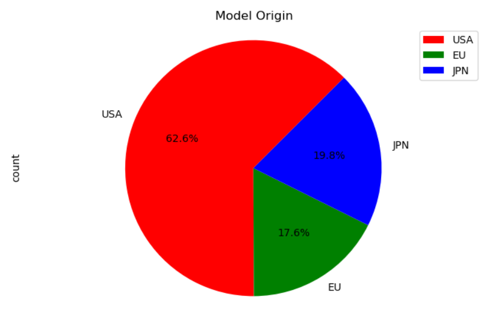
Boxplot
Boxplot은 데이터의 분포를 파악하는데 이용됩니다. Boxplot의 특징 중 하나는 그래프상에
outlier가 같이 표현된다는 것입니다. 즉, 데이터에 이상치가 있는지를 쉽게 눈으로 파악할
수 있도록 해 줍니다.
Boxplot은 4분위값을 이용해서 아래의 그림처럼 표현됩니다.
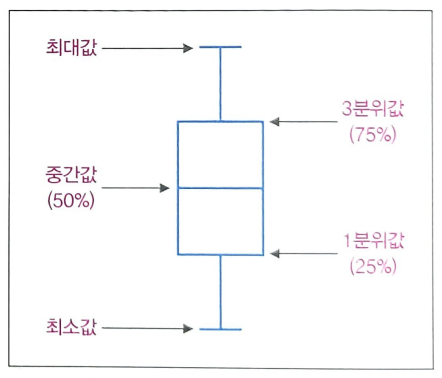
Origin에 따른 연비분포를 Boxplot을 이용해서 그려보도록 하겠습니다.
import pandas as pd
import matplotlib.pyplot as plt
from matplotlib import font_manager, rc
plt.rcParams['axes.unicode_minus'] = False
font_path = './font/malgun.ttf'
font_name = font_manager.FontProperties(fname=font_path).get_name()
rc('font', family=font_name)
plt.style.use('seaborn-poster')
df = pd.read_csv('./data/auto-mpg.csv', header=None)
# display(df)
# column이름 지정
df.columns = ['MPG','Cylinders','Displacement','Horsepower','Weight','Acceleration',
'Model Year','Origin','Name']
plt.boxplot(x=[df.loc[df['Origin']==1,'MPG'],
df.loc[df['Origin']==2,'MPG'],
df.loc[df['Origin']==3,'MPG']],
labels=['USA', 'EU', 'JPN'])
plt.title('제조국가별 연비 분포')
plt.show()
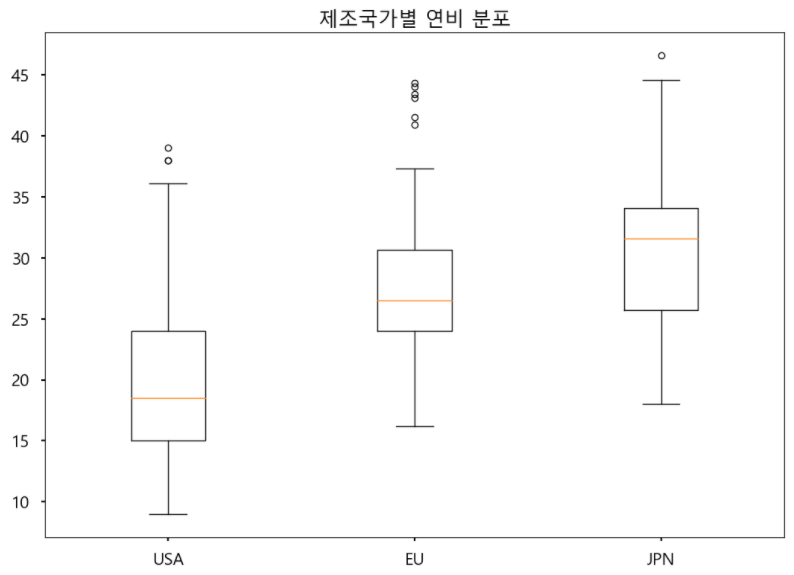
End.
Data-Science 강좌는 아래의 책과 사이트를 참조했습니다. 조금 더 자세한 사항을 알고 싶으시면 해당 사이트를 방문하세요!!